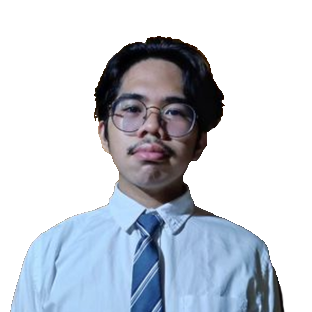
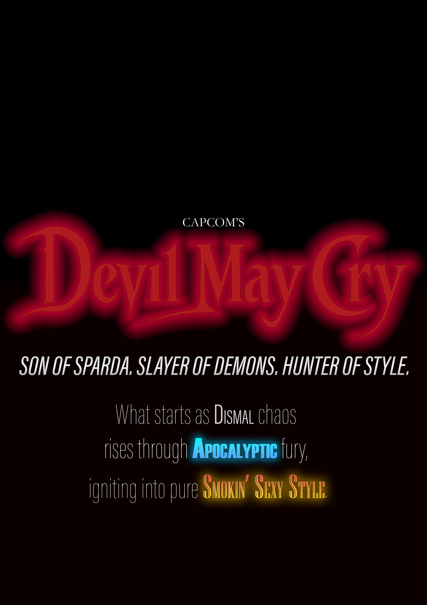

01 / 03
01 / 03
A warm, seasonal identity carried through a set of coffee-shop campaign graphics.
Lou Benedict E. Oyos
IT Student · Graphic Designer · Front-End Developer
I’m an Information Technology student in Laguna who brings ideas to life through visual identity, campaign design, and responsive web experiences.
Thoughtful design, built for people.

The project overview
This portfolio brings together selected graphic design projects created through study and experimentation. From brand marks and campaign graphics to expressive type, each piece is a chance to turn a concept into a clear visual voice.
The goal is simple: make the work easy to explore, give every project room to speak, and show how each idea takes shape.
Browse the selected workA few things I’ve made
Three projects. Three different ways
to make an idea feel real.
01 / 03
A warm, seasonal identity carried through a set of coffee-shop campaign graphics.
A dramatic emblem developed into a family of complementary logo variations.

03 / 03A type-led poster study inspired by the energy and visual world of the game.
Good design starts with a good question.